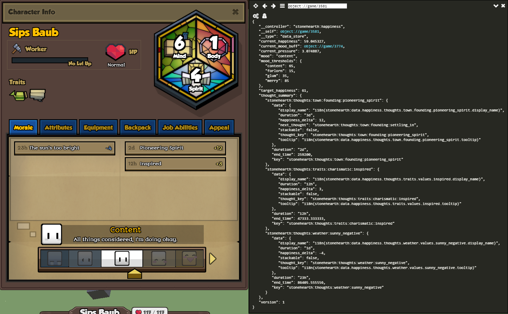

Hearthlings get the happiness component and the thoughts component from the base_human.json mixin. These components allow them to be able to get happy or sad, based on their current thoughts, which we can see in the Morale tab of the character sheet.
The thoughts will be added from different Lua scripts, such as AI actions, components, or trait controllers, and will be removed automatically if they have a finite duration.
Adding thoughts
To add a new thought to the list of available thoughts, we need to mixinto stonehearth/data/happiness/thoughts.json in our manifest:
"mixintos" : {
"stonehearth:data:thoughts" : "file(data/happiness/thoughts.json)"
}
Our mixinto will look like this:
{
"thoughts": {
"traits": {
"mutually_exclusive": true,
"values": {
"impatient": {
"display_name": "i18n(my_mod:data.happiness.thoughts.traits.values.impatient.display_name)",
"tooltip": "i18n(my_mod:data.happiness.thoughts.traits.values.impatient.tooltip)",
"happiness_delta": -5,
"duration": "12h",
"stackable": false
}
}
}
}
}
First there's a "thoughts" key. Inside it there are identifiers to group the thoughts. Inside those identifiers there can be some properties, and then there's a "values" field, which contains more custom identifiers that correspond to the thoughts, or to other groups.
One common property that we can find inside the group identifiers is "mutually_exclusive" : true. This means that only one thought inside this group can be active at a time. Check the sleepiness thoughts, for example: the "fatigued" thought will replace the "tired" thought when it is added, because they are mutually exclusive. If this property is false, then more than one thought from this group can be active at the same time.
Some thoughts are based on "thresholds" rather than "values". But those are still consulted from some Lua script. For instance, the thoughts about space (crampedness) have (besides the "mutually_exclusive" property): "time_average": true, "averaging_period": "1m", and then instead of "values" they have a "thresholds" map of thoughts. Then the open_space_observer.lua consults these properties and automatically adjusts the thoughts based on the fields inside the thresholds map.
For the traits, there's a "values" entry with some non-exclusive thoughts, but there's also other identifiers at the same level than "values", defining groups of exclusive thoughts. That way, we can nest groups and define different exclusions for them.
There are different properties that we can include in a thought:
- "display_name" -- the localized text that will be shown in the Morale tab of the character sheet.
- "tooltip" -- the localized text that will be displayed for the tooltip when we hover over the thought.
- "happiness_delta" -- this is the value that will be added to the current happiness value over time (use a negative value if you want the thought to be negative / decrease happiness). Don't use decimal values for this field. Happiness ranges from 0 to 100 (starts at 50).
- "duration" -- a time expression. If we include this field, the thought will be automatically removed after the duration expires. The duration will be shown in the UI too, decreasing over time. Other thoughts might override this one, depending on the "mutually_exclusive" property, so it might last less time.
- "stackable" -- whether this thought can be stacked or not.
- "max_stacks" -- if "stackable" is true, this field defines the maximum number of times that we can stack the thought (an indicator of the stacks appears in the UI). This means that if the thought is added again while it's already active, it will stack the happiness delta for this thought, instead of overwriting it.
- "max_threshold" -- a value for thoughts that are managed by thresholds.
- "hide" -- a boolean. We use this field for some neutral thoughts (happiness_delta 0) that we don't want to be displayed in the UI (since thoughts are divided in positive or negative in the character sheet).
To add a thought from a trait controller (or from any other Lua script) we'd call the add_thought function from radiant/modules/entities.lua and pass the entity to which we want to add the thought, the URI of the thought, and some parameters for the tooltip of the thought if we need to:
radiant.entities.add_thought(self._sv._entity, 'stonehearth:thoughts:traits:impatient', {
tooltip_args = {
target_name = radiant.entities.get_custom_name(target)
}
})
To reference the thoughts, we have to build the URI like this: 'mod_namespace:thoughts:thought_category:thought'. For example:
"stonehearth:thoughts:traits:charismatic:inspired",
"stonehearth:thoughts:traits:plant_lover",
"stonehearth:thoughts:job:gained_a_level"
Notice that we separate the keys with colons, like URIs.
 The happiness component reads the thoughts from
The happiness component reads the thoughts from stonehearth/data/happiness/thoughts.json, so we must make a mixinto to it in order to add our custom thoughts to the list (we can reuse existing categories/groups or add new ones). But we can also use the namespace of our mod to reference our custom thoughts. For instance, the example above would also have worked if we had referenced the thought like this: 'my_mod:thoughts:traits:impatient'.
To test in game, we can manually add and remove thoughts with the default console (if the command doesn't appear, enable the debugtools mod):
add_thought stonehearth:thoughts:traits:charismatic:inspired
remove_thought stonehearth:thoughts:traits:charismatic:inspired
Select the hearthling, open the default console and type the add_thought command. Notice that we pass the thought URI as argument without quotes.
We can see the internal values of happiness and thoughts by inspecting the happiness component of a selected hearthling with debugtools. Select a hearthling, open the Object Browser, and click on the value for "stonehearth:happiness": 